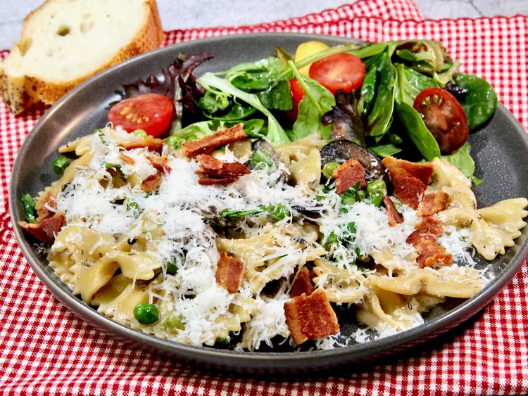
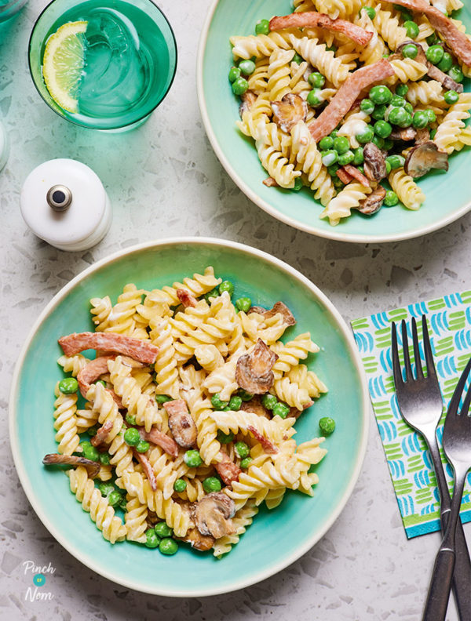

Creamy Pasta with Mushrooms and Peas

Fresh and nutritive pasta with mushrooms and peas
Taste the fresh and exquisite pasta that will make you want another plate!
This creamy pasta with mushrooms and peas is such an easy dish to make, and it's packed with savory flavor.
Ingredients
- 8 ounces farfalle pasta
- 3 strips bacon
- 1 tablespoon olive oil
- 1 tablespoon unsalted butter
- 8 ounces baby bella mushrooms, sliced
- 1 small onion, diced
- 3 cloves garlic, minced
- 3/4 cup half-and-half
- 1 1/2 cups frozen petite peas
- 1 teaspoon dried thyme
- 1 tablespoon freshly-squeezed lemon juice
- salt and freshly ground black pepper to taste
- 1/2 cup freshly grated Parmesan cheese
- 1 tablespoon chopped fresh parsley for garnish, or as needed
Steps
- Bring a large pot of salted water to a boil. Add farfalle and cook until tender with a bite, about 11 minutes, stirring occasionally. Drain pasta, reserving 1/2 cup of pasta water to thin the sauce later if needed.
- Meanwhile, heat a large skillet over medium heat. Add bacon; cook, turning occasionally, until crisp, 3 to 5 minutes. Transfer bacon to a paper towel to drain. When cool enough to handle, crumble and set aside. Remove bacon grease from skillet.
- Heat oil and butter in the skillet over medium heat; add mushrooms and onions. Cook until onions are translucent and the moisture in mushrooms is starting to evaporate, 3 to 5 minutes, stirring occasionally. Stir in garlic, and cook until fragrant, about 30 seconds.
- Reduce heat to low, stir in half-and-half, peas, and thyme. Bring to a gentle simmer, and cook until peas are heated through and sauce has started to thicken, 3 to 4 minutes. If sauce is too thick, add a little reserved pasta water to thin.
- Stir in lemon juice and season to taste with salt and pepper. Sprinkle with Parmesan cheese, garnish with crumbled bacon and chopped parsley, and serve immediately.
